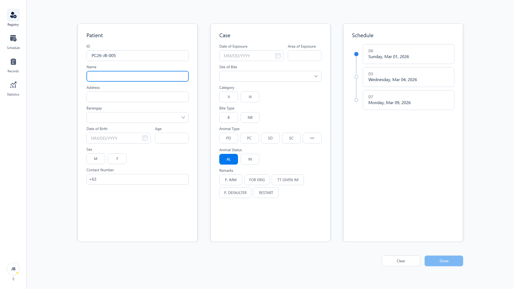
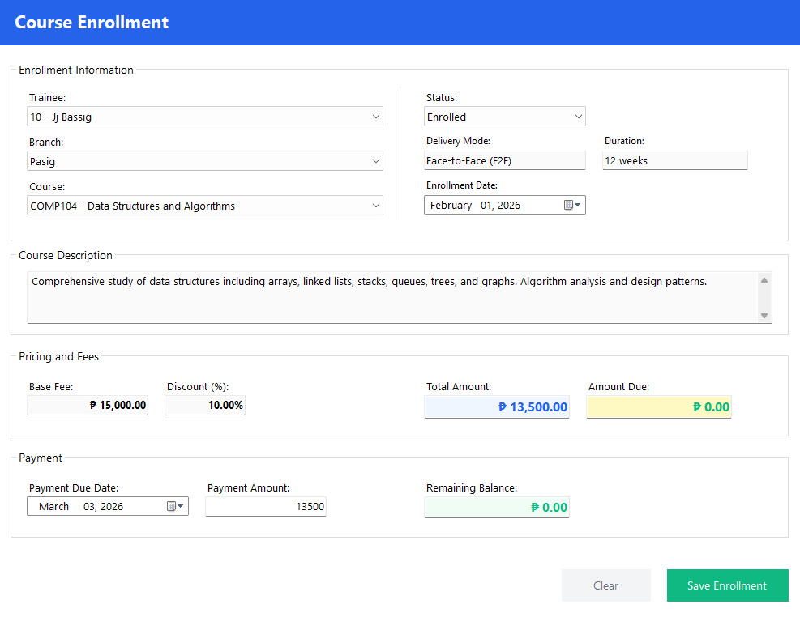
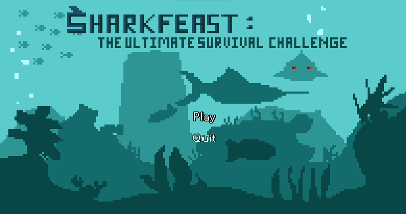
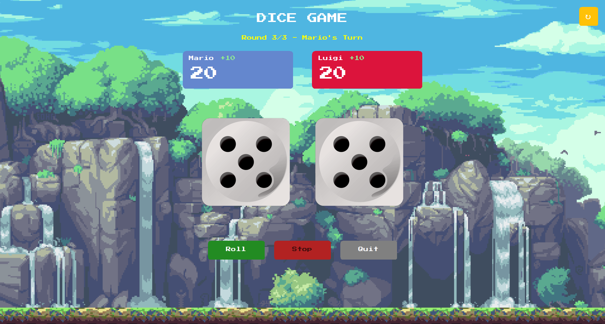
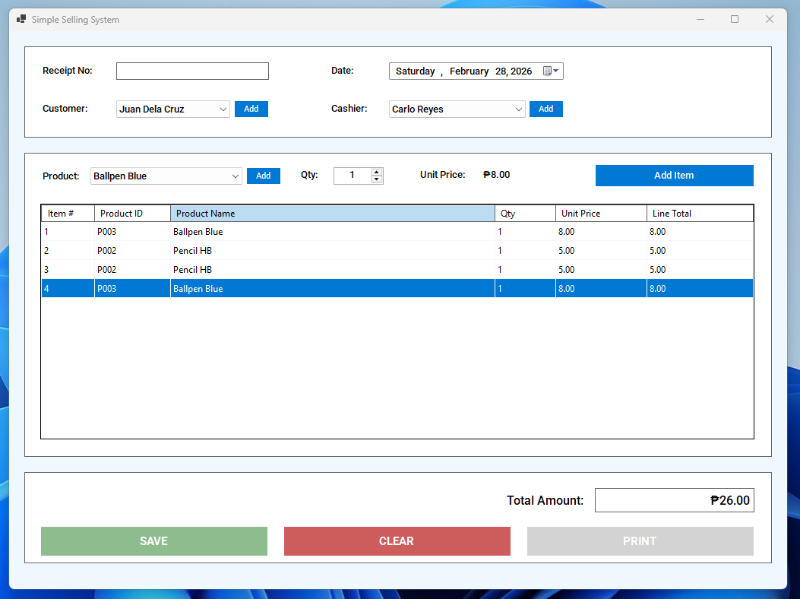

FULL STACK DEVELOPER · BSIT 2ND YEAR
@JjByteX · Pamantasan ng Lungsod ng Pasig · Pasig, PH
From Redstone circuits to real-world systems — building software that matters, with security as the foundation.
01 · ABOUT
I'm Jj Sanchez Bassig, a BSIT student focused on becoming a full stack software engineer. I’m interested in building structured, reliable systems — not just completing requirements.
I enjoy working on backend logic, database design, and authentication flows. Understanding how things work under the hood matters to me more than just making features run.
Right now, I’m improving my knowledge in cloud infrastructure and secure database connectivity. I value clean architecture, maintainability, and security from the ground up.
02 · SKILLS
LANGUAGES
DATABASES
TOOLS & FRAMEWORKS
ENVIRONMENT
CURRENTLY LEARNING
03 · PROJECTS

A full-scale desktop management system replacing an error-prone Excel workflow at the Pasig City Hall Animal Bite Treatment Center. Features patient record management, automated dose scheduling, statistics dashboards, and a dual-mode architecture — offline-first with SQLite, and a live sync to a remote PostgreSQL instance hosted on Fedora. Python handles machine learning on the backend. Built for reliability, data integrity, and a workflow that's 100× faster than spreadsheets.

A desktop management system for a multi-branch training center. Handles course enrollment, branch-specific pricing and discounts, installment payment tracking, trainer assignment, and certification records. Designed with full normalization analysis (UNR → 3NF) and intentional denormalization for performance on overdue payment reports.

An arcade survival game where you control a shark — dodge incoming bombs, catch fish to rack up points. Built in 4 days with a team of 2 developers and 1 graphic designer for a course requirement.

A retro-styled dice game with a Mario-inspired pixel aesthetic — designed and built in under an hour. A testament to quick execution under time pressure.

An academic sales management system featuring core business logic — transaction handling, inventory tracking, and reporting. Built to demonstrate proficiency in database-driven application development.
04 · CONTACT
Whether you're looking to collaborate on a project, have an opportunity in mind, or just want to talk tech — I'm open to it. Security-first, always.
FIND ME ONLINE